Check Templates
Check Templates empower users to efficiently create, manage, and apply standardized checks across various datastores, acting as blueprints that ensure consistency and data integrity across different datasets and processes.
Check Templates streamline the validation process by enabling check management independently of specific data assets such as datastores, containers, or fields. These templates reduce manual intervention, minimize errors, and provide a reusable framework that can be applied across multiple datasets, ensuring all relevant data adheres to defined criteria. This not only saves time but also enhances the reliability of data quality checks within an organization.
Let's get started 🚀
Navigation
Step 1: Log in to your Qualytics account and click the "Library" button on the left-side panel.
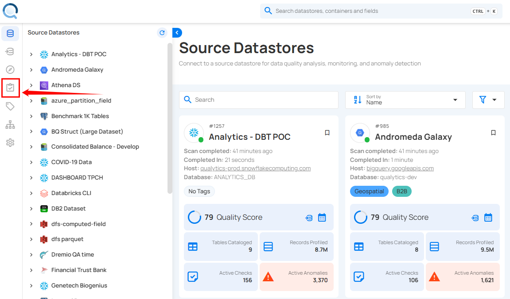
Step 2: Click on the "Add Check Template" button in the top-right corner.
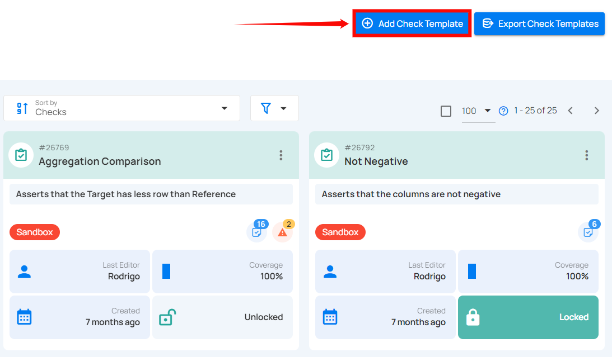
A modal titled "Check Template Details" will appear, providing you with the options to add the check template details.
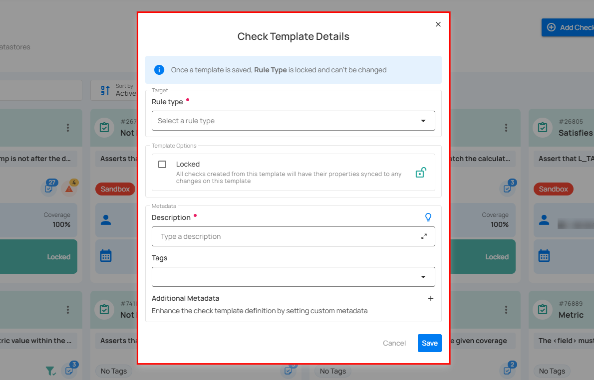
Create a Check Template
Step 3: Enter the following details to add the check template:
- Rule Type (Required)
- Filter Clause
- Template Options
- Description (Required)
- Tags
- Additional Metadata
Rule Type
Select a Rule Type from the dropdown menu for data validation, such as checking for non-null values, matching patterns, comparing numerical values, or verifying datetime constraints. Each rule type defines the specific validation logic to be applied.
For more details about the available rule types, refer to the "Check Rule Types" section.
Note
Different rule types have different sets of fields and options appearing when selected.
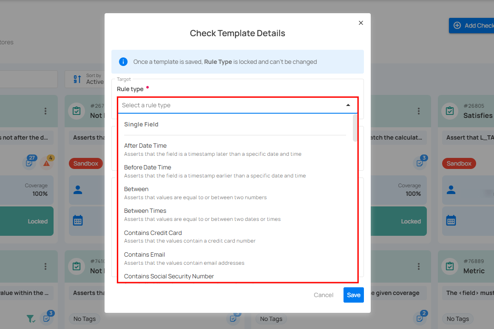
Filter Clause
Specify a valid Spark SQL WHERE expression to filter the data on which the check will be applied.
The filter clause defines the conditions under which the check will be applied. It typically includes a WHERE statement that specifies which rows or data points should be included in the check.
Example: A filter clause might be used to apply the check only to rows where a certain column meets a specific condition, such as WHERE status = 'active'.
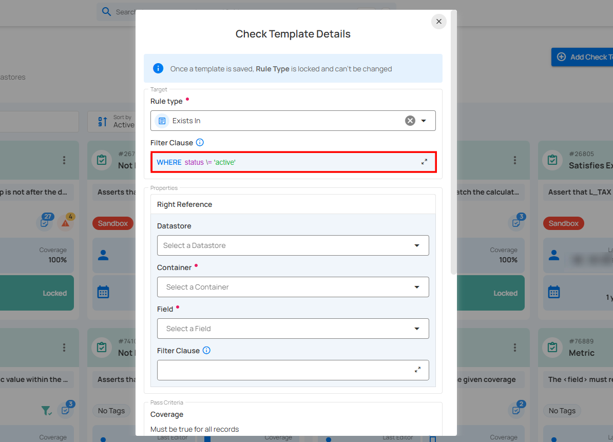
Using each()
The each() keyword allows you to create multiple checks from a single Check Template — one for each value in a provided list.
This makes it easier to apply the same check logic across multiple dimensions (such as regions, countries, or product categories) without manually creating separate checks.
Syntax:
Example:
A data team wants to ensure that daily order counts are never zero for each country where the business operates. Instead of creating a separate check for every country, they use each() in a single template.
When creating checks from this template, Qualytics automatically generates four separate checks one per country—each validating order data independently.
Behavior:
- The
each()keyword can only be used when creating checks from a template. - It is not supported when updating an existing check's filter.
- If you try to create a check with
each()when permutations already exist for the check, an error will appear. To add or remove permutation values, update the template's filter instead. - You can include multiple
each()clauses in the same filter. Each clause is expanded independently, generating all possible permutations.
Note
Permutation logic runs when checks are created from a template or when the template's filter is updated. Editing an existing check's filter does not trigger permutations.
Checks Created by each()
Example with Multiple each() Clauses:
A marketplace team wants to verify transaction volume across regions and business segments.
This produces 4 checks (2 × 2 permutations):
region = 'EU' AND category = 'Retail'region = 'EU' AND category = 'Wholesale'region = 'US' AND category = 'Retail'region = 'US' AND category = 'Wholesale'
Each check runs independently, making it easy to pinpoint which segment or region has an issue.
Managing Permutations
Once checks with permutations exist, add or remove values by updating the template's filter. The system will create or delete checks accordingly based on whether the template is locked.
Locked vs. Unlocked Templates
| Template State | Behavior |
|---|---|
| Locked | Removing a value from an each() array deletes the corresponding check. Adding a new value creates a new check. |
| Unlocked | Adding a new value creates a new check. Removing a value does not delete existing checks. |
Example
Initial filter when creating checks:
Result:
-
The system generates three checks — one each for Italy, Mexico, and Spain.
-
Adding 'BRA' creates a new check for Brazil.
-
If the template is locked and 'ESP' is removed, the Spain check is deleted.
-
If the template is unlocked, existing checks remain even after removing values.
Note
each()can be combined with other standard filter operators (=,>,<,IN, etc.).- Multiple
each()clauses can be used within the same filter to support complex filtering logic. - This feature applies only to checks created from templates — not to standalone checks without a template.
Coverage
Adjust the Coverage setting to specify the percentage of records that must comply with the check.
Note
The Coverage setting applies to most rule types and allows you to specify the percentage of records that must meet the validation criteria.
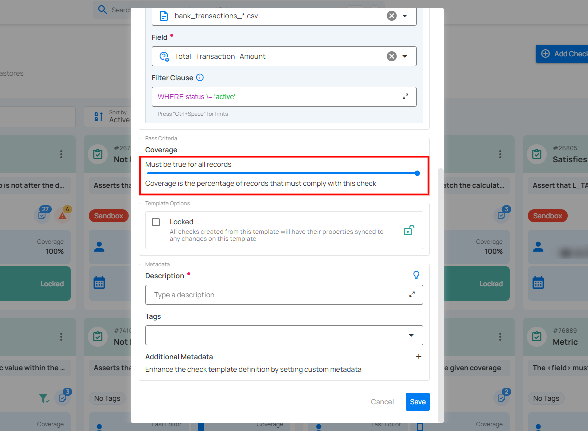
Template Options
Check or uncheck the "Template Locked" option to determine whether all checks created from this template will have their properties automatically synced to any changes made to the template.
For more information about the template state, jump to the "Template State" section below.
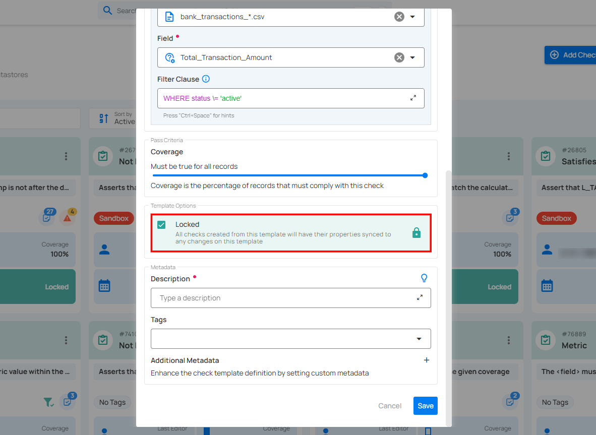
Description
Enter a detailed description of the check template, including its purpose, applicable data, and relevant information to ensure clarity for users. If you're unsure of what to include, click on the "💡" lightbulb icon to apply a suggested description based on the rule type.
Example: "The < field > must exist in bank_transactions_*.csv.Total_Transaction_Amount (Bank Dataset - Staging)".
This description clarifies that the specified field must be present in a particular file (bank_transactions_*.csv) and column (Total_Transaction_Amount) within the Bank Dataset.
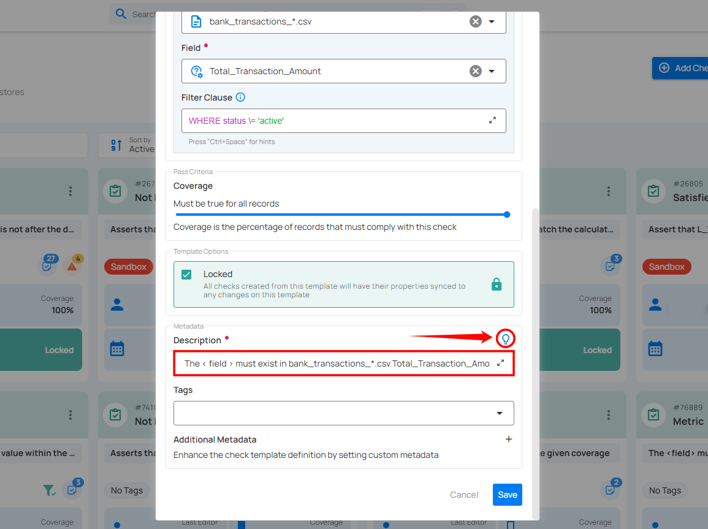
Tags
Assign relevant tags to your check template to facilitate easier searching and filtering based on categories like "data quality", "financial reports", or "critical checks".
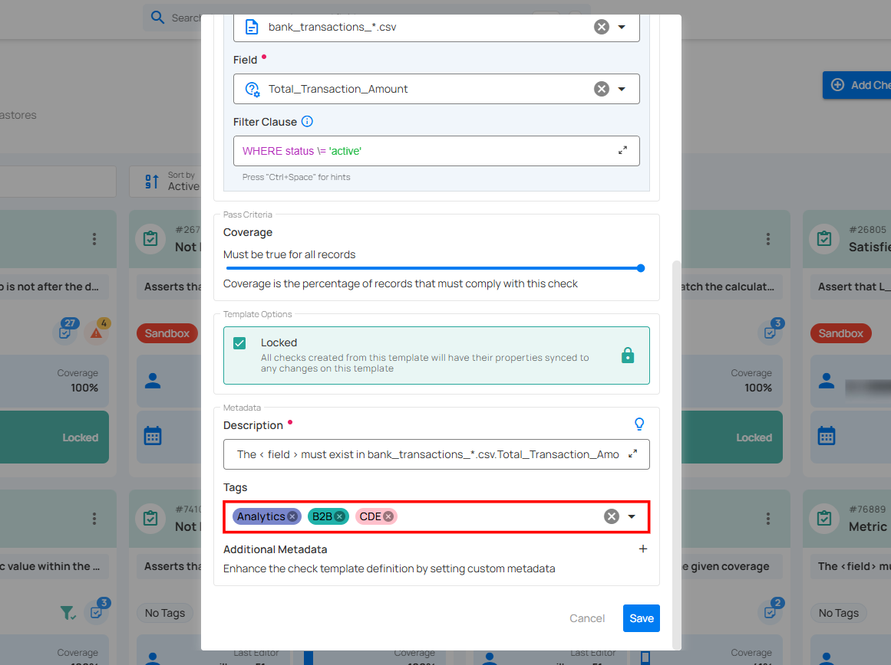
Additional Metadata
Add key-value pairs as additional metadata to enrich your check. Click the plus icon (+) next to this section to open the metadata input form, where you can add key-value pairs.
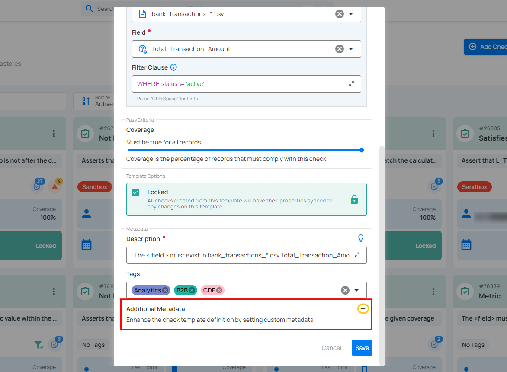
Enter the desired key-value pairs (e.g., DataSourceType: SQL Database and PriorityLevel: High). After entering the necessary metadata, click "Confirm" to save the custom metadata.

Step 4: Once you have entered all the required fields, click the “Save” button to finalize the template.
Warning
Once a template is saved, the selected rule type becomes locked and cannot be changed.
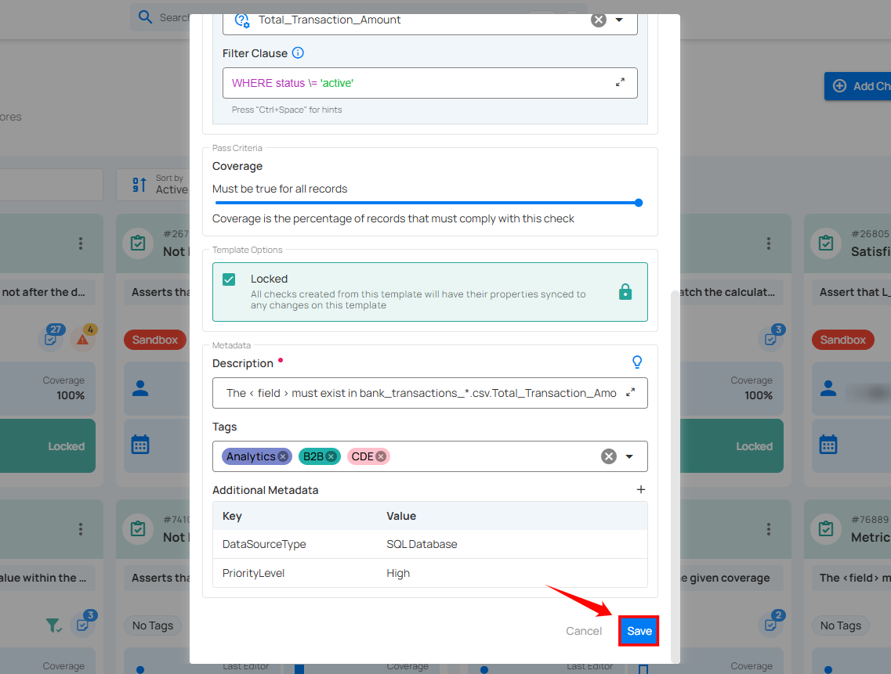
After clicking the Save button, a success notification appears on the screen confirming that the check template was created successfully.
After saving the check template, you can now Apply a Check Template to create Quality Checks, which will enforce the validation rules defined in the template across your datastores. This ensures consistent data quality and compliance with the criteria you’ve established.
Once a check template is created, you can view its details by clicking on it, where three tabs are displayed at the top: Overview, Checks, and Anomalies.
Template Details
Overview Tab
The Overview tab gives a complete view of a check template, showing its key details, configuration, and recent activities. In the Summary section, users can also use redirect buttons to quickly navigate to related tabs like Checks and Active Anomalies. Information is divided into three sections: Summary, Activity, and Definition.
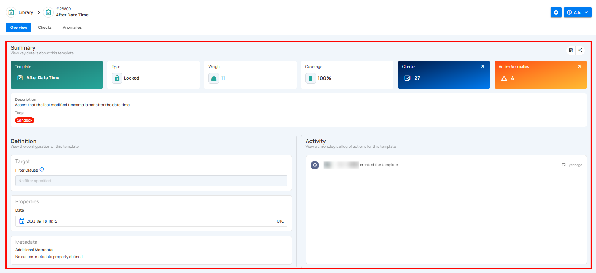
Summary
The Summary section provides a quick overview of the check template's key details, including its name, type, priority, coverage, associated checks, active anomalies, description, and tags — helping users quickly understand its purpose and current status.
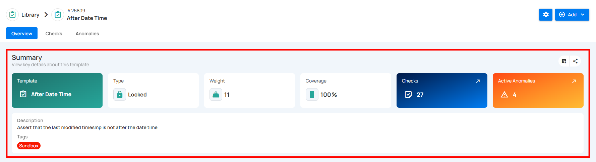
| REF. | Field | Description |
|---|---|---|
| 1 | Template | The rule type of the check template, indicating its purpose (e.g., “After Date Time”). |
| 2 | Type | Indicates whether the template is Locked (cannot be edited) or Unlocked (editable). |
| 3 | Weight | A numeric value representing the importance or priority level of the template in scoring or decision-making. |
| 4 | Coverage | The percentage of relevant dataset elements to which this template is applied. |
| 5 | Checks | The total number of checks currently using this template. You can click on the (↗) button to navigate directly to the Checks tab. |
| 6 | Active Anomalies | The count of unresolved anomalies detected by checks associated with this template. You can click on the (↗) button to navigate directly to the Anomalies tab. |
| 7 | Description | A short statement explaining the logic or purpose of the check template. |
| 8 | Tags | Used to categorize and filter templates (e.g., “Sandbox”). Users can change the tags by clicking the tag badge. |
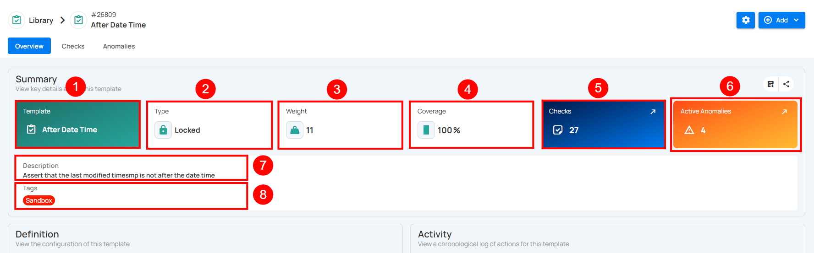
Definition
The Definition section displays the configuration details of a check template. It outlines the target conditions, specific properties, and any additional metadata associated with the template, providing clarity on how and where it is applied.
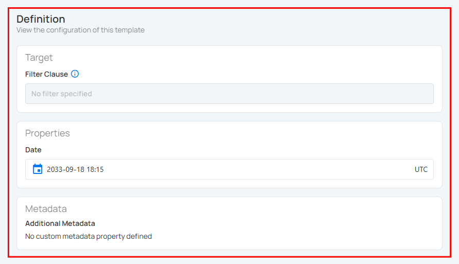
| REF. | Field | Description |
|---|---|---|
| 1 | Target | Defines the filter condition applied to the dataset. If no filter is specified, the check template applies to all data in the target scope. |
| 2 | Properties | Displays configuration details specific to the check type. Content varies based on the selected check:
|
| 3 | Metadata | Displays any custom metadata properties linked to the template. If none are defined, this section remains empty. |
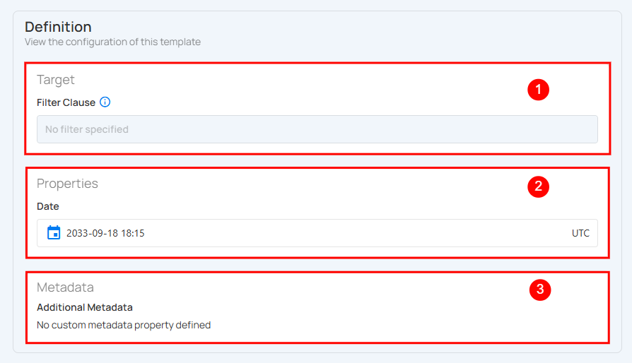
Activity
The Activity section provides a chronological log of all actions and updates related to this template. It tracks key events such as creation, modifications, and other relevant activities, along with timestamps to show when they occurred.
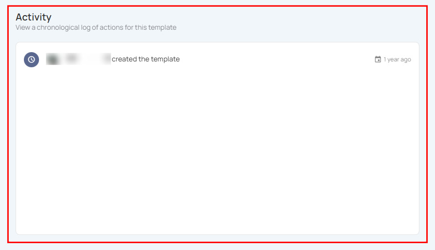
You can hover over a timestamp to view the full date and last modified time.
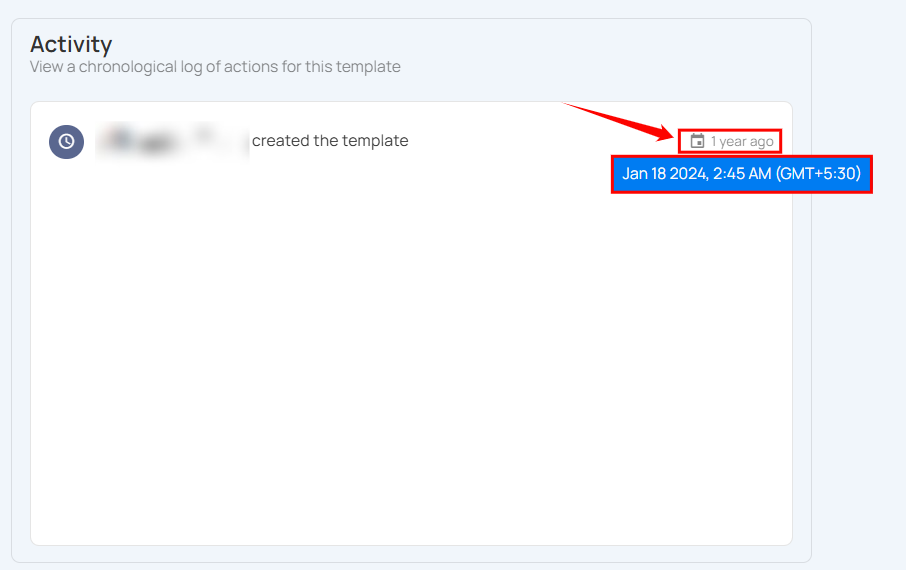
Checks Tab
The Checks tab provides a comprehensive view of all checks linked to the chosen datastore, container, or field, along with their source details such as computed table and field information. By clicking options such as Active, Important, Favorite, Draft, Archived (Invalid and Discarded), or All, users can instantly view checks based on their status. This categorization helps in organizing, reviewing, and managing checks more effectively for consistent data quality oversight.
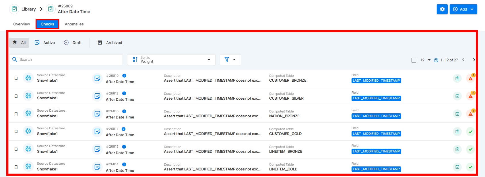
Alternatively, users can navigate to the Checks tab directly from the Overview tab by clicking the redirect button in the Checks section of the Summary panel.
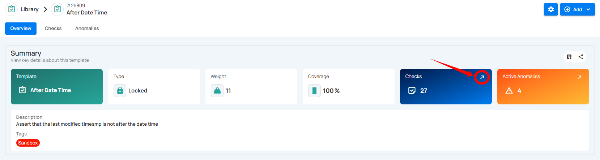
Anomalies Tab
The Anomalies tab displays all anomalies detected for the selected check template, along with details such as source datastore, computed table, field, rule, and the number of anomalous records. Users can view anomalies based on their status: Open, Active, Acknowledged, Archived, or All and sort them based on specific parameters.
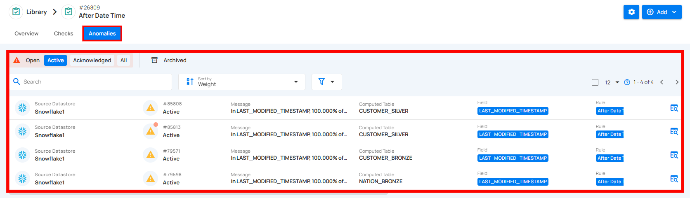
Alternatively, users can navigate to the Anomalies tab directly from the Overview tab by clicking the redirect button in the Active Anomalies section of the Summary panel.
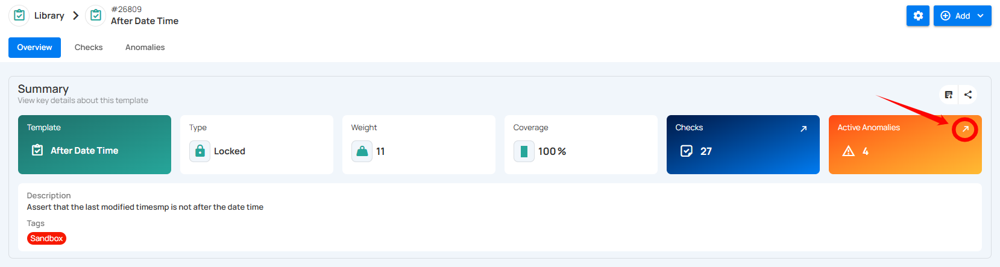
Multiple Checks Creation
Users can create multiple checks at once by selecting a template and adding multiple targets. Each target will generate its own check.
Step 1: Click on the Add button located in the top right corner and select Multiple Checks from the dropdown.
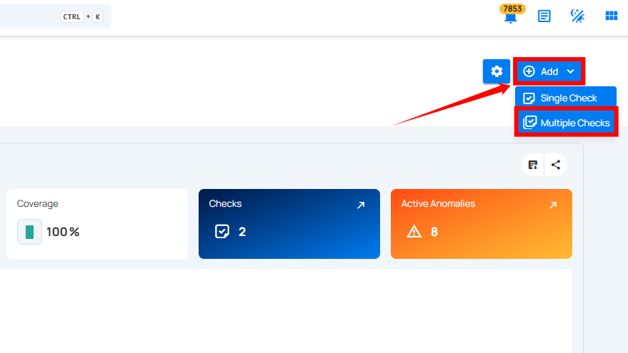
A Bulk Add Quality Checks modal window will appear. Fill in the details:
| No. | Field | Description |
|---|---|---|
| 1. | Datastore | Select the datastore where the check should be applied. |
| 2. | File/Table | Choose the file/table within the selected datastore. |
| 3. | Field | Select the field to apply the check on. |
| 4. | Filter Clause | Specify a valid Spark SQL WHERE expression to filter the data on which the check will be applied. |
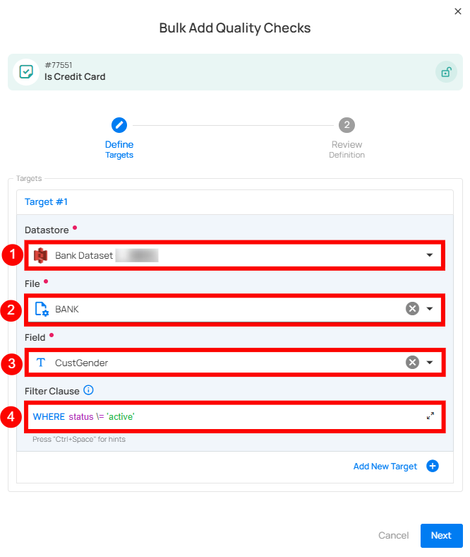
Step 2: Click on the Add Target button to create another check. You can keep adding targets to create as many checks as you need within the same template.
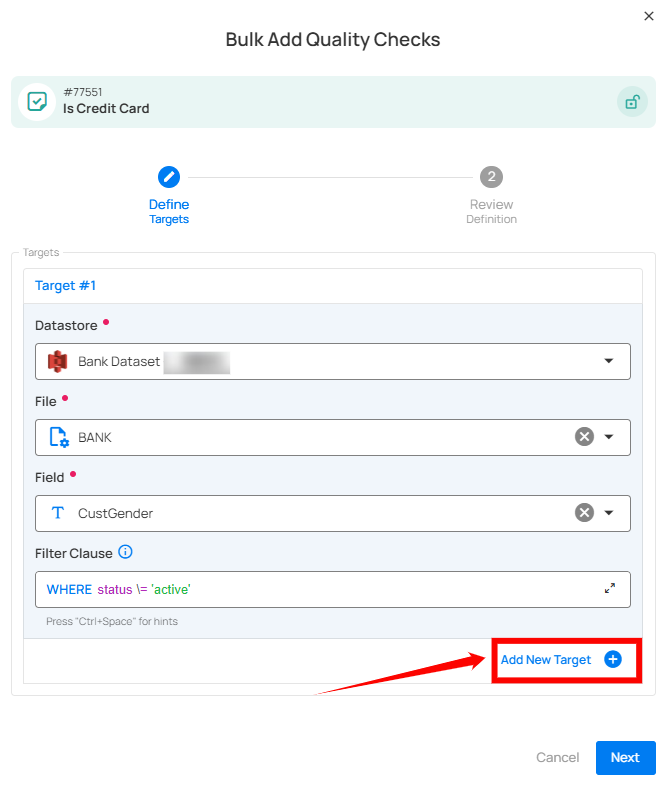
Template State
Any changes to a template may or may not impact its related checks, depending on whether the template state is locked or unlocked. Managing the template state allows you to control whether updates automatically apply to all related checks or let them function independently.
Unlocked
- Quality Checks can evolve independently of the template. Subsequent updates to an unlocked Check Template do not affect its related quality checks.
Locked
- Quality Checks from a locked Check Template will inherit changes made to the template. Subsequent updates to a locked Check Template do affect its related quality checks.
Info
Tags will be synced independently of unlocked and locked Check Templates, while Description and Additional Metadata will not be synced. This behavior is general for Check Templates.
graph TD
A[Start] -->|Is `Template Locked` enabled?| B{Yes/No}
B -->|No| E[The quality check can evolve independently]
B -->|Yes| C[They remain synchronized with the template]
C --> D[End]
E --> D[End]